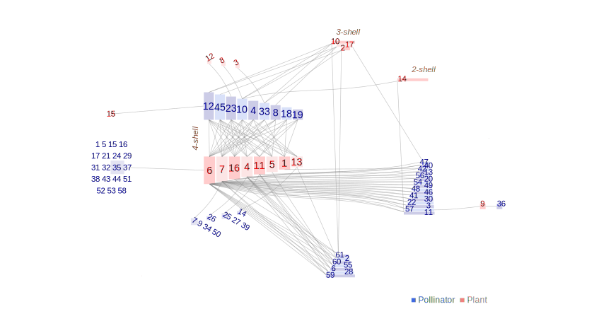

Network: M_PL_006

Pollinator 1 Adela.rufimatrella, 2 Andrena.haemorrhoa, 3 Andrena.pubescens, 4 Andrena.wilkella, 5 Anosymia.sp1.M_PL_006, 6 Anthomyidae.sp1.M_PL_006, 7 Autographa.sp1.M_PL_006, 8 Bombus.hortorum, 9 Bombus.lapidarius, 10 Bombus.pascuorum, 11 Bombus.pratorum, 12 Bombus.terrestris.lucorum, 13 Cheilosia.albitarsis, 14 Chloromyia.formosa., 15 Chrysogaster.sp1.M_PL_006, 16 Empis.livida, 17 Eriothrix.rufomaculatus, 18 Eristalinus.sepulcharius, 19 Eristalis.intricarius, 20 Eristalis.nemorum, 21 Eristalis.pertinax, 22 Eristalis.tenax, 23 Helophilus.sp1.M_PL_006, 24 Helophilus.trivittatus, 25 Lasioglossum.calceatum, 26 Lasioglossum.leucozonium, 27 Lasioglossum.villosulum, 28 Lasiommata.megera., 29 Lejogaster.splendida, 30 Lucillia.sp1.M_PL_006, 31 Lycaena.phlaeas., 32 Malachius.viridus., 33 Maniola.jurtina, 34 Megachile.willughbiella, 35 Melanostoma.sp1.M_PL_006, 36 Meliscaeva.sp1.M_PL_006, 37 Micromoth.sp1.M_PL_006, 38 Nemotelus.pantherinus, 39 Neoascia.tenur, 40 Ochlodes.venata., 41 Odontomyia.tigrina, 42 Odontomyia.viridula, 43 Oligia.sp1.M_PL_006, 44 Parhelophilus.sp1.M_PL_006, 45 Phaonia.incarna, 46 Platycheirus.sp1.M_PL_006, 47 Pollenia.sp1.M_PL_006, 48 Polyommatus.icarus., 49 Psithyrus.vest, 50 Pyronia.tithonus., 51 Rhagio.tringarius, 52 Rhagonycha.fulva, 53 Sarcophagus.sp1.M_PL_006, 54 Scathophaga.stercoraria, 55 Sphaerophoria.sp1.M_PL_006, 56 Syritta.pipiens, 57 Syrphus.sp1.M_PL_006, 58 Tetanocera.ferruginea., 59 Thymelicus.sp1.M_PL_006, 60 Tropidia.scitta, 61Zygaena.filipendulae.
Plant
1 Achillea millefolium, 2 Centaurea nigra, 3 Cirsium arvense, 4 Hypochoeris radicata, 5 Lathyrus pratensis, 6 Leucanthemum vulgare, 7 Lotus corniculatus, 8 Lychnis flos-cuculi, 9 Plantago lanceolata, 10 Prunella vulgaris, 11 Ranunculus acris, 12 Taraxacum officinale, 13 Trifolium dubium, 14 Trifolium pratense, 15 Trifolium repens, 16 Vicia cracca, 17Vicia sativa
Dicks, LV, Corbet, SA and Pywell, RF 2002. Compartmentalization in plant-insect flower visitor webs. J. Anim. Ecol. 71: 32-43. Hickling, Norfolk, UK